How I Built Kodomi, a Collaborative No-Code Platform for Designers.
Kodomi. Dec 24.
Built a versatile no-code tool empowering designers to rapidly prototype and share UI components and full websites.
Kodomi emerged from my ambition to enable designers and developers to effortlessly collaborate, build, and publish web projects using powerful no-code features.
Problem.
Sharing interface ideas often felt harder than it should. Design tools were great for mockups but not for building live, modular sites. Hand off took too long and moving assets between projects was messy. I wanted a way to think in components and publish without leaving the flow.
Goal.
Create a no code platform where designers and developers can build real sites, plug in UI libraries from GitHub, and publish with a system that stays consistent across pages. Make the tool friendly for individuals and small teams, not just specialists.
Research and Benchmarking.
I mapped the space across Webflow, Framer, Bubble, Wix, and a niche builder called TapTop. Each had strengths, but most lacked simple component libraries that travel across projects, version history, or a clear sitemap. These gaps shaped what Kodomi had to do from day one.
Competitive benchmarking.
Primary Insight.
Speed comes from modularity. If tokens, components, and libraries are first class, people design faster and ship with fewer errors. That guided everything from the asset model to how pages inherit style.
Key Concepts.
Integrate UI libraries through GitHub and let users buy full kits or single elements in a marketplace. Keep a token based design system under the hood so style stays consistent. Add an AI Designer that can generate a page or refine an element from a prompt.
Key Screens.
Assets Editor for full project control. AI Designer for generation and refinement. Sitemap to plan and reuse templates. Library and Marketplace to mix GitHub based kits and individual elements. These screens formed the shortest path from idea to a working site.
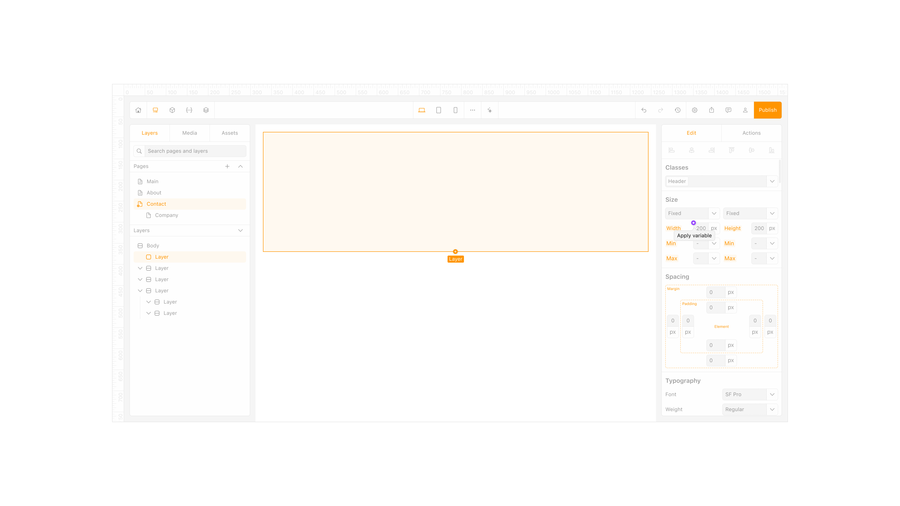
Assets editor.
Global action bar.
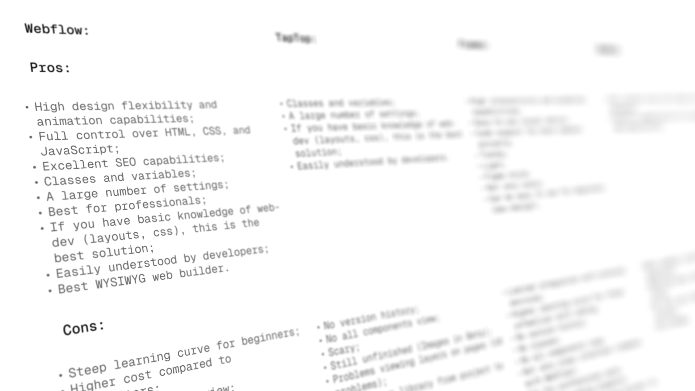
Element property inspector.
Personas.
I focused on three users. A small business owner who needs a site she can update herself. A freelance designer who wants to reuse high quality UI and deliver fast. A startup founder who needs customization and quick launch without hiring a large team. Their needs validated the library model, the sitemap, and the AI helper.
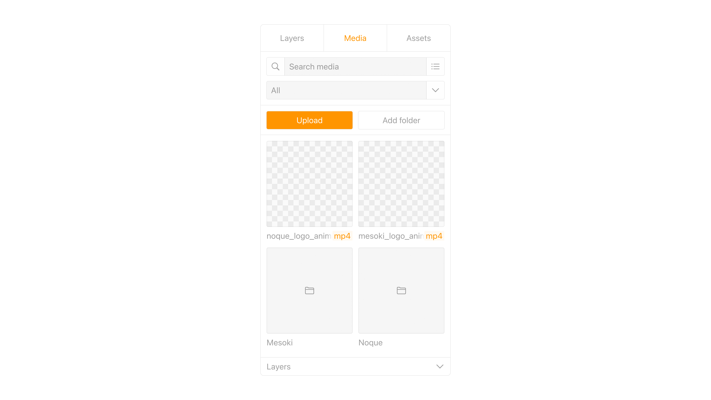
Personas.
AI Designer.
The AI Designer turns intent into structure. Type what you need and it assembles a layout with the right components and styles. It can also tune an existing screen and suggest improvements based on trends and your connected libraries.
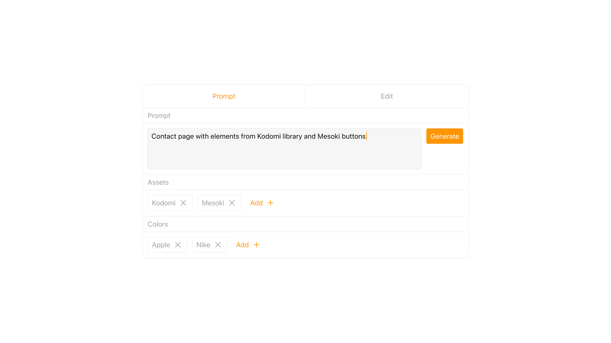
AI generation interface.
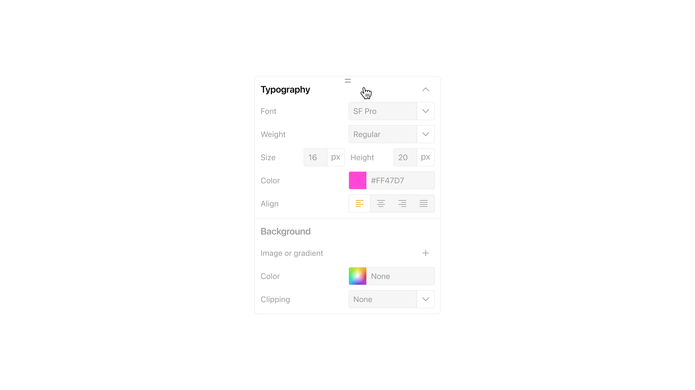
AI generation prompt.
Design System.
Everything runs on tokens and components. Color, type, spacing, and motion inherit from tokens so changes cascade safely. I built both light and dark themes early to keep parity as screens grew. The first version covered 22 screens and set the pattern for more.
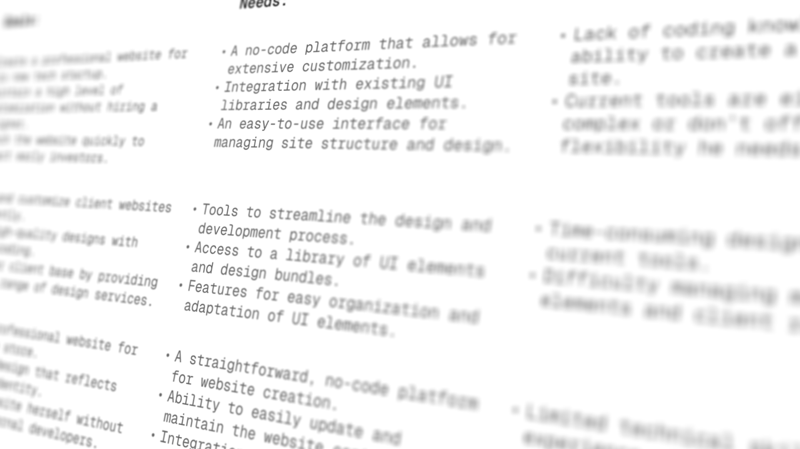
Component sizing options.
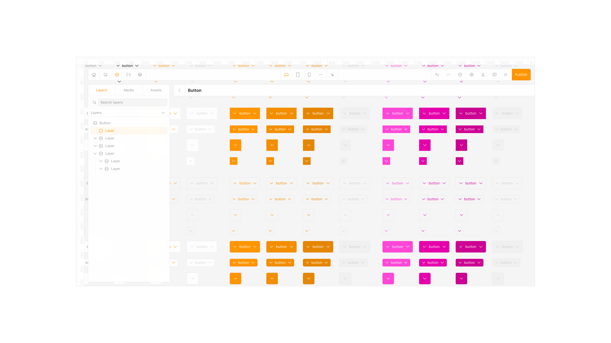
Typography settings panel.
My Role.
I initiated the concept, led product design, created the sitemap and flows, built the token system, and partnered with an art director and a developer to prototype and test. I also shaped the strategy toward an investor ready direction.
Workflow.
Competitive analysis fed into sketches, then wireframes, then an interactive prototype. I kept a tight loop between asset structure, tokens, and publishing so each decision improved speed and clarity rather than adding settings.
Assets Editor.
The Assets Editor became the control room. It shows every element, section, and form in one place and lets you update, remix, or create components without hunting across pages. It also pulls in new libraries so projects evolve without a rebuild.
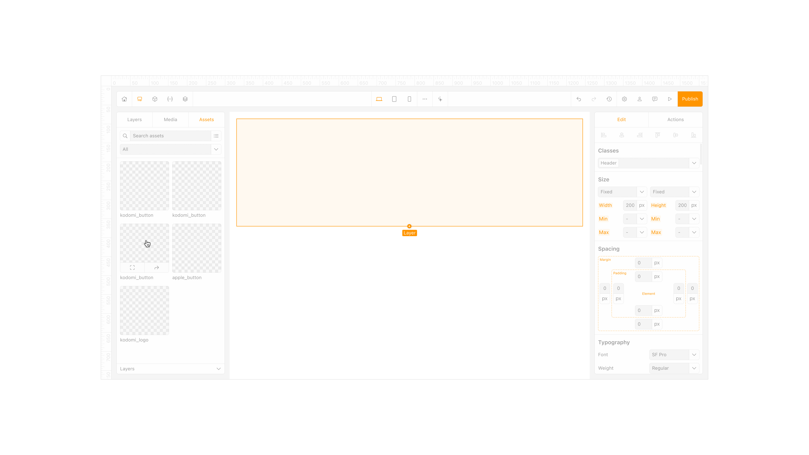
Media asset manager.
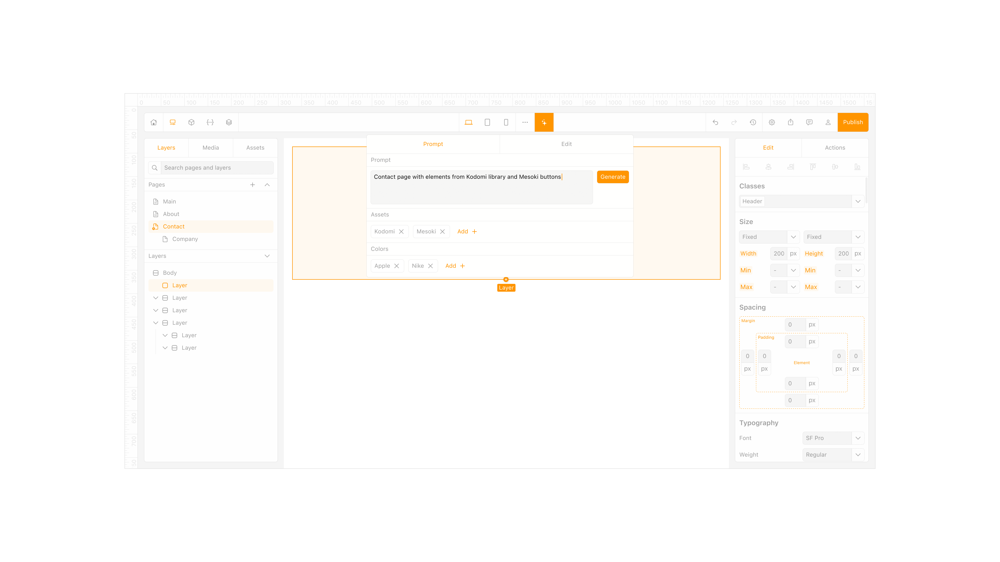
Drag-and-drop element placement.
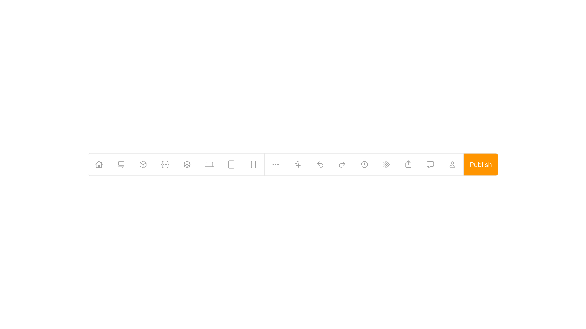
Create or generate project.
What's Next.
Expand the marketplace, deepen library integration, and add multiuser collaboration with version control and performance work to meet a growing user base.
Takeaway.
Kodomi taught me that good tools feel quiet. When components, tokens, and libraries do the heavy lifting, designers stay in flow and teams move faster from sketch to site.
More in Projects.
Developed intuitive digital cockpits integrating real-time data visualization, driver-centric design, and responsive interfaces.
Crafted native-style widgets for car controls, bringing Apple's clarity and consistency into everyday driving.
Engineered an innovative mobile app simplifying restaurant interactions through streamlined ordering and efficient pickup.
Designed a vibrant digital music experience tailored specifically to the dynamic preferences of new generation.
Established a minimalist stationery brand that seamlessly blends functional design and engaging digital storytelling.
More in Nuggets.
More in Readings.
A reflection on how Apple Maps uses voice intonation to manage your emotional state while driving, and why Google Maps and Waze don't.
A reflection on finally owning the Pebble 2 Duo, a tiny comeback story about detail, nostalgia, and honest design.
A short manifesto for what Readings is, how I use it, and how to read it.
Copyright Maksim Anisimov.